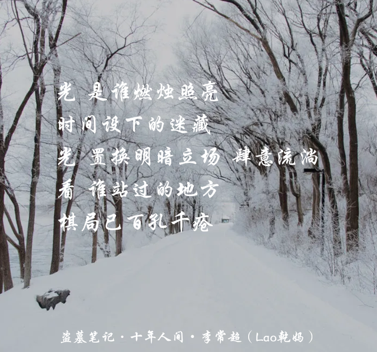

内容简介
青铜门是《盗墓笔记》终极篇章的核心场景，承载着整个系列最大的秘密——终极。青铜门位于长白山深处，是一扇通往未知世界的巨大门扉，门后隐藏着关于宇宙、生命、外星文明的终极真相。
青铜门并非简单的门，而是一艘上古坠毁的飞船残骸，门后是千手观音形态的外星生物沉睡之所。陨玉是飞船的部件，能够维持生命细胞的再生，如同宇宙飞船中的冷冻睡眠仓。每隔一段时间，新的万奴王便需进入青铜门接替旧者，完成未竟的使命。
而这一切，都与张家——这个守护了千年秘密的家族——以及吴邪与张起灵之间那段跨越十年的约定，紧紧相连。
人物介绍
吴邪
曾经天真无邪的古董店小老板，历经沧桑后蜕变为心思缜密的布局者。他是解开青铜门秘密的关键人物，也是那个在十年后主动踏入门扉、替张起灵承担终极重任的人。吴邪的可怕之处在于——他比任何人都懂得人心，比任何人都能利用人心。
从七星鲁王宫的懵懂少年，到沙海中运筹帷幄的"邪帝"，吴邪的成长轨迹令人唏嘘。他失去了天真，失去了潘子，失去了太多，却从未放弃守护身边人的执念。他的反攻计划，正是在无数鲜血与泪水浇灌下，终于成型的终极反击。
张起灵（闷油瓶）
张家最后的守门人，拥有超凡的身手与近乎永恒的生命。他守护着青铜门的秘密，却也背负着无法摆脱的宿命。十年之约，是他对吴邪最深的信任——将终极托付给唯一的朋友。
张起灵的记忆是残缺的，他一次次进入青铜门，一次次遗忘前尘。他的孤独是刻在骨子里的，千年守望，无人能懂。直到遇见吴邪，他才第一次有了"同伴"的概念。
王胖子
嘴碎心善的摸金校尉，吴邪最忠实的伙伴。在青铜门篇中，他是那个在吴邪最艰难时刻依然不离不弃的人。他的幽默与豁达，是这个沉重故事中最温暖的底色。
解雨臣
戏子出身的九门后人，背负着家族的枷锁与使命。在反攻计划中，他承担了至关重要的角色，是吴邪布局中不可或缺的一环。
剧情分析
青铜门的秘密
青铜门下是一艘上古坠毁的飞船，外星人是那种千手观音的形态。其实坠落的不是陨石，而是飞船的残骸。陨玉是飞船的部分部件，意味着长生不死，身体细胞持续生长，类似于宇宙飞船里的冷冻睡眠仓，用于保持宇航员在长久航行情况下的生命力。
青铜门后应该有这种东西，每个万奴王快死的时候，就进入青铜门重新沉睡，保持存活。同时，从青铜门后陨玉中沉睡的外星人中唤醒一个接替。至于塔木托的陨玉，里面不是也有人么，可能是残留下来的外星人。
铁面生、东夏人和张家祖先，应该是外星人的人类合作者，或者是外星人血统在与人类的混合，或者被外星人做过人种改良。早在鲁殇王时代人类就和这种外星生物就有过接触，鲁殇王拿到鬼玺后进过青铜门，获得了千手观音式外星人的帮助，借了所谓的"阴兵"。
张起灵的宿命
初代张起灵本身就是一个东夏人，在元朝蒙古人攻东夏的时候，他背叛东夏，盗走鬼玺，目的是阻止万奴王更迭。千手观音式的万奴王，作为一种外星生物，自然不会将人类当做人类看待。初代张起灵难以忍受万奴王残暴统治而出此下策。
由于鬼玺被盗，在蒙古人攻东夏时，东夏人无法借助青铜门后万奴王的力量，于是被蒙古人屠戮殆尽。这也解释了为什么东夏人从强盛走向消亡——失去了外星生物力量的帮助，他们终究不堪一击。
十年之约
张起灵进入青铜门前，与吴邪定下十年之约。这不仅仅是一个承诺，更是两个灵魂之间最深沉的信任。张起灵将终极的秘密托付给吴邪，而吴邪用十年时间来守护这个约定。
十年间，吴邪遍体鳞伤，回不去天真。他从一个被人保护的天真少年，成长为一个能够保护所有人的"邪帝"。每一次受伤，每一次失去，都在磨砺着他的心智，让他变得更加冷酷、更加果断。
而张起灵在青铜门内，独守空门，忆不起前尘。他的记忆一次次被抹去，千年来的守望化为虚无。但即便如此，他依然记得那个约定，记得那个说"我等你"的人。
汪藏海的远见
就汪藏海来说，汪藏海想公开秘密的原因，应该是相信人们在知道这个秘密之后，能够协力在一起对抗这种生物。对于汪藏海这种类似科学家的人物来说，他们往往相信人类能力的无限性，相信人定胜天。
但是，张家的意见似乎是不相信人们能采取理性的态度，怕有人像以前的东夏人那样想要得到外星生物的力量而唤醒他们。汪和张的分歧，正是人性中最深刻的矛盾——面对未知，有人选择对抗，有人选择隐藏。
吴邪的反攻计划
吴邪的反攻计划是整个系列最精彩的布局。他利用汪家对青铜门秘密的觊觎，一步步引诱汪家深入陷阱。他布局沙海，操控全局，将所有人——包括敌人和朋友——都变成他棋盘上的棋子。
这个计划的可怕之处在于，吴邪将自己也当成了棋子。他不在乎身败名裂，不在乎众叛亲离，甚至不在乎生死。他只在乎——十年后，张起灵能够走出青铜门，而那个世界依然安全。
在反攻计划中，吴邪展现了他最可怕的一面：他比任何人都懂得人心，比任何人都能利用人心。他知道汪家的贪婪，知道九门的软弱，知道每一个人都有弱点。而他，正是利用这些弱点，编织了一张天罗地网。
终极的意义
终极不仅仅是一个秘密，更是关于人类命运的终极拷问。面对来自宇宙的力量，人类究竟应该如何自处？是像东夏人那样试图攫取力量，还是像张家那样选择隐藏？
吴邪给出了第三种答案：面对它，了解它，然后超越它。他的反攻计划不是为了毁灭，而是为了掌控。他要让人类不再是被动的守护者，而是主动的探索者。
解析
最可怕的是人心
这部小说反复提及的核心主题——最可怕的是人心，贪欲人人皆有，尤其是掌控巨大力量的贪欲。知道了这种巨大力量的存在，必定会有人试图去攫取该种力量，或是试图对抗这种力量，这都很危险，都可能引发青铜门后的异变。
张家人就是看到了东夏人攫取这种力量却自取灭亡的教训，所以定下了永守秘密的祖训。血的教训成就这个家族使命，即使这个使命并不一定很符合理想。
张家与汪家的博弈
外星人的存在以及外星人背后掌控着人类社会，这无疑是一个值得多年保守的秘密。因为如果泄露，既有的社会秩序会混乱，这尤其不利于社会内处于统治阶级的精英。
对张家来说，以前这些外星人对人类并不友好，至少被人们视为一种邪恶和恐怖的存在。所以，初代张起灵在看到万奴王残暴统治的情况下，背叛了他们。张家的使命，就是在守护与遗忘之间寻找平衡。
分析
十年人间
所以十年，吴邪遍体鳞伤，回不去天真；所以十年，张起灵独守空门，忆不起前尘；所以十年，黑瞎子笑看人生，躲不过死神；所以十年，谢雨花枷锁一身，卸不下重任；所以十年，王胖子守着孤坟，忘不了伊人；所以十年，潘子尸骨无存，得不到安稳；所以十年，吴三省谜海浮沉，解不了疑问。
角色命运的悲歌
青铜门篇是整个《盗墓笔记》系列最沉重的篇章。每一个角色都在命运的漩涡中挣扎，每一段关系都在时间的长河中接受考验。吴邪与张起灵的十年之约，不仅仅是一个承诺，更是一种信念——即使世界崩塌，有些东西依然值得守护。
潘子的牺牲、王胖子的坚守、解雨臣的隐忍……每一个人都在用自己的方式诠释着"守护"的意义。他们或许只是虚拟的人物，但他们的故事，却让无数读者泪流满面。
或许你们只是虚拟的人物，但你们依旧是我的青春。
